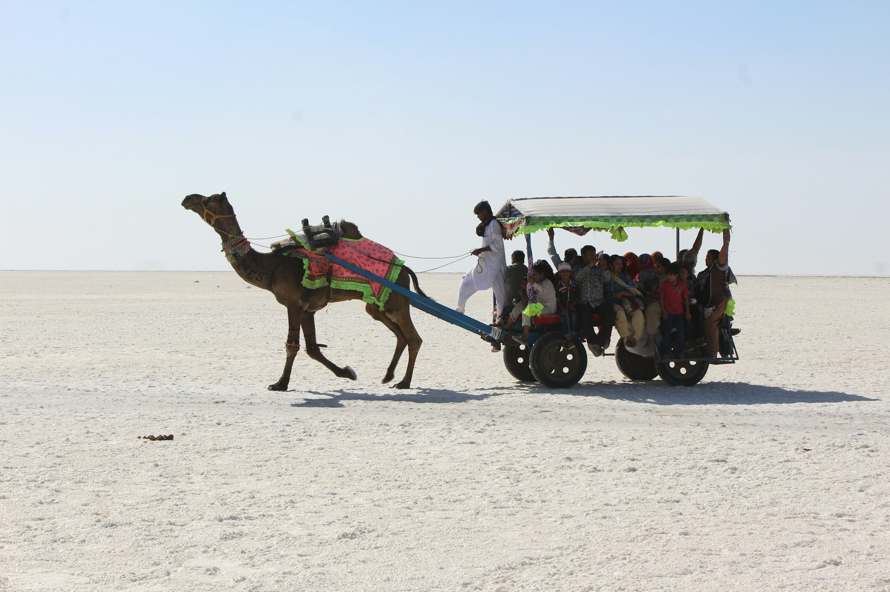
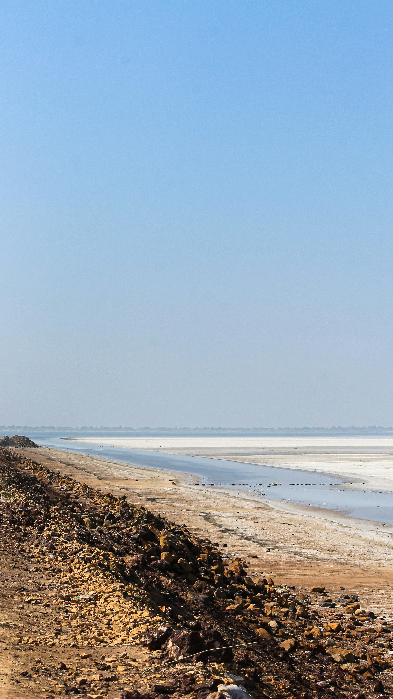
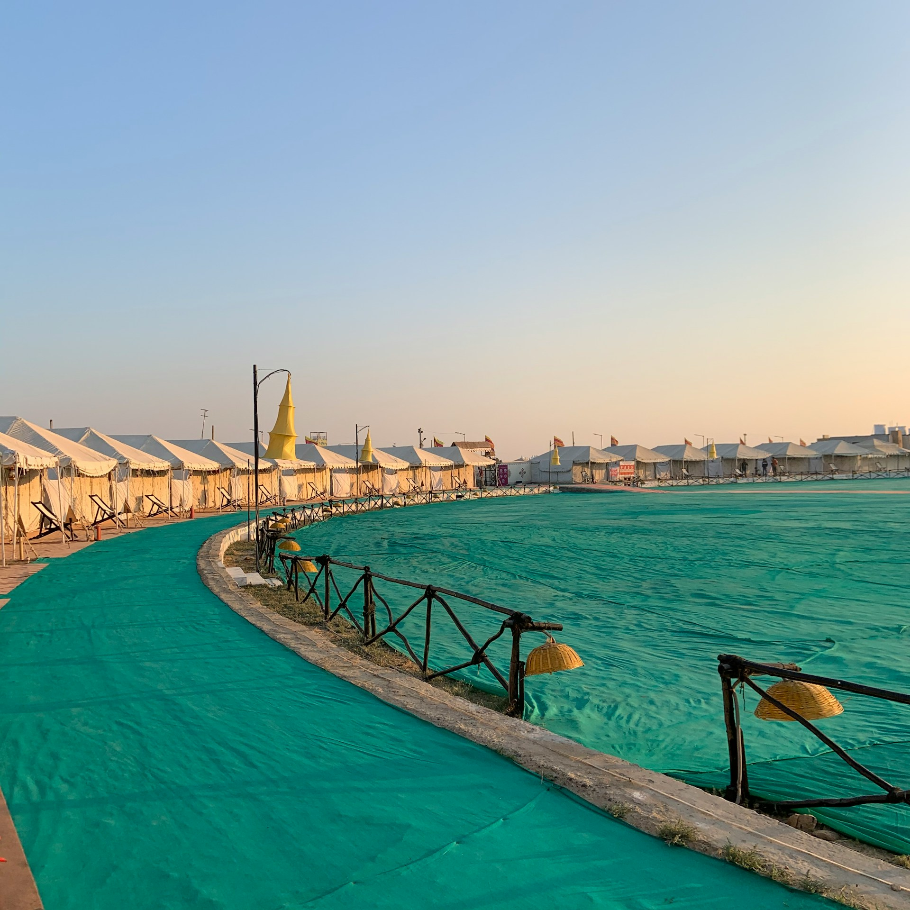
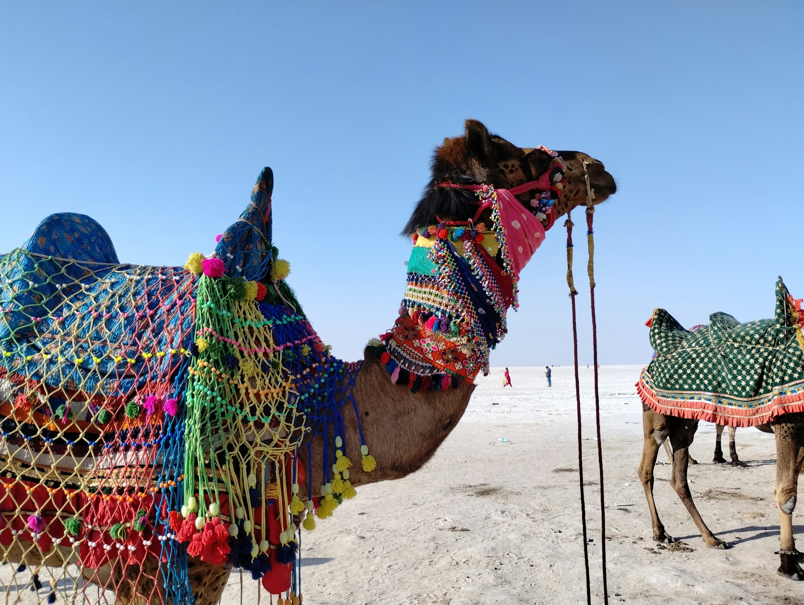
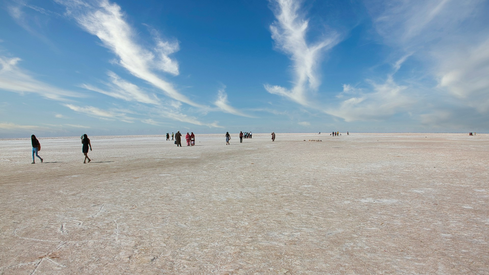
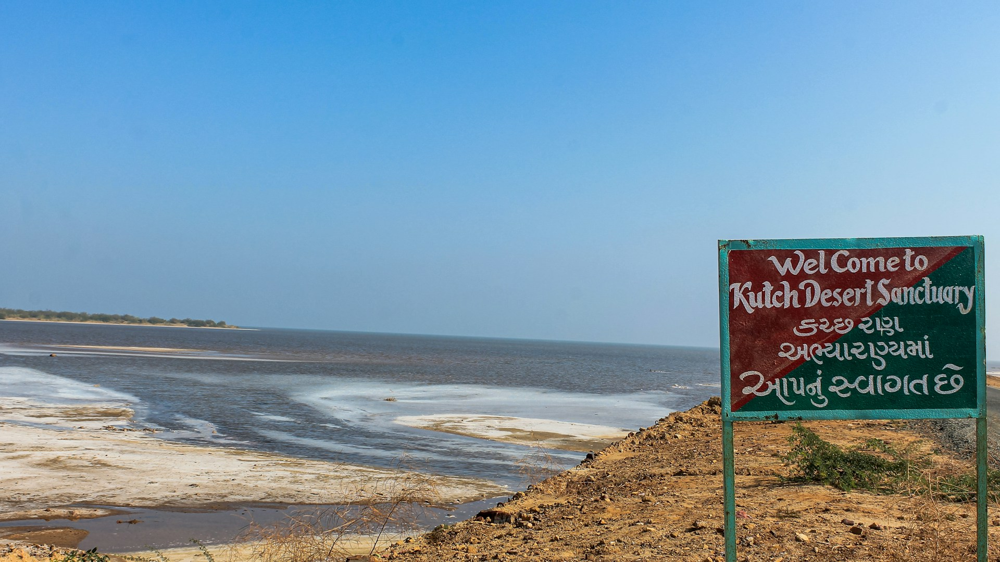

The Rann of Kutch is a vast, arid region located in the western part of India, primarily in Gujarat. Known for its
surreal beauty and unique landscape, the Rann is a salt marsh that comes to life during the annual Rann Utsav.
The Rann is famous for its white sand that stretches across the horizon, offering an almost otherworldly experience. During the winter months, it becomes a hub for cultural festivals, with folk music, dance, and crafts from the region. The area also offers wildlife safaris and bird-watching opportunities, especially in the nearby Kutch Desert Wildlife Sanctuary.
The Rann Utsav, held during the winter months, attracts thousands of tourists who come to enjoy the vibrant cultural performances, local handicrafts, and traditional food. The festival celebrates the rich cultural diversity of Gujarat and the Kutch region.
The Rann is famous for its white sand that stretches across the horizon, offering an almost otherworldly experience. During the winter months, it becomes a hub for cultural festivals, with folk music, dance, and crafts from the region. The area also offers wildlife safaris and bird-watching opportunities, especially in the nearby Kutch Desert Wildlife Sanctuary.
The Rann Utsav, held during the winter months, attracts thousands of tourists who come to enjoy the vibrant cultural performances, local handicrafts, and traditional food. The festival celebrates the rich cultural diversity of Gujarat and the Kutch region.





Tips for Visit
- Best season: November to February for the Rann Utsav and cool weather.
- Wear comfortable clothing and footwear, as the terrain is quite rugged.
- Book your stay in advance, especially during the Rann Utsav.
- Carry sunscreen and water as it can get hot during the day.
- Don't miss the stunning sunset and night sky views in the Rann.

Ramesh Kumar
15 yrs guiding in Agra
⭐⭐⭐⭐⭐
Farida Begum
Mughal history specialist
⭐⭐⭐⭐☆
Imran Ali
Speaks English, Hindi, French
⭐⭐⭐⭐⭐
Priya Sharma
Cultural & heritage tours
⭐⭐⭐⭐
Local Services
| NAME | CONTACT |
|---|---|
| Tourist Helpdesk | +91-2832-251700 |
| Local Taxi | +91-9876543210 |
| Hotel Info | +91-2832-251900 |
| Emergency | 100 / 108 |
Nearby Places
| NAME | Location | Highlights |
|---|---|---|
| Bhuj | 80 km | Cultural center |
| Mandvi Beach | 90 km | Beach relaxation |
| Kutch Desert Wildlife Sanctuary | 100 km | Wildlife and bird watching |
| Vandhi Beach | 75 km | Peaceful beach |